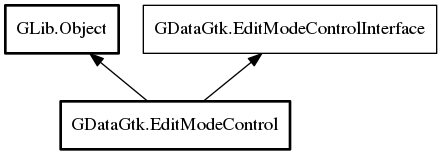

EditModeControl
Object Hierarchy:

Description:
public class EditModeControl :
Object,
EditModeControlInterface
Simple edit mode control object for auto widgets in cases when there is no actual data binding or when it needs to be manipulated
externally
Since:
0.1
Content:
Properties:
Creation methods:
Methods:
Inherited Members:
All known members inherited from class GLib.Object
- @new
- new_valist
- newv
- add_toggle_ref
- add_weak_pointer
- bind_property
- connect
- constructed
- disconnect
- dispose
- dup_data
- dup_qdata
- freeze_notify
- @get
- get_class
- get_data
- get_property
- get_qdata
- get_type
- notify_property
- @ref
- ref_sink
- replace_data
- replace_qdata
- remove_toggle_ref
- remove_weak_pointer
- @set
- set_data
- set_data_full
- set_property
- set_qdata
- set_qdata_full
- steal_data
- steal_qdata
- thaw_notify
- unref
- weak_ref
- weak_unref
- notify
- ref_count
All known members inherited from interface
GDataGtk.EditModeControlInterface